Introduction

Experimental Design (1)
- Researcher determines the population to which they wants to generalize their conclusions.
- Financial and logistic limitations \(\rightarrow\) representative sample from population
Data analysis (2 & 3)
- Data-Exploration en Descriptive Statistics (2): explore, visualize, summarize, gain insight, check assumptions
- Statistical Inference (3): Generalize what we observe in the sample towards the population so that we can draw general conclusions on the biological process we study. We need statistical models to analyze the data, and, to quantify and report on variability and uncertainty.
Example
- National Health and Nutrition Examination Survey (NHANES)
- American demografic study
- Large number of physical, demographic, nutritional, life style and health characteristics
| 51624 |
male |
164.7 |
30.0_plus |
1.29 |
8 |
| 51625 |
male |
105.4 |
12.0_18.5 |
NA |
NA |
| 51630 |
female |
168.4 |
30.0_plus |
1.16 |
10 |
| 51638 |
male |
133.1 |
12.0_18.5 |
1.34 |
NA |
| 51646 |
male |
130.6 |
18.5_to_24.9 |
1.55 |
NA |
| 51647 |
female |
166.7 |
25.0_to_29.9 |
2.12 |
20 |
Variables
- We measure variables on subjects in the sample
- A Variable is a charactistic e.g. Direct cholesterol, Age, Gender,, …
- It varies from subject tot subject in the population and thus also within the sample as well as from sample to sample.
Types of variables
- Qualitative variables: a limited number of outcome categories, non-numeric.
- nominal variables: no natural ordening, e.g. gender, blood group, eye color, …
- ordinal variables: ordening, e.g. BMI class, smoking status (1: never smoked, 2: stopped smoking, 3: smoker)
- Numeric variables:
discrete variables: counts e.g. number of parners in life span, …
continuous variables: can (in theory) take each possible value between certain limits e.g. Age, Weight, BMI, fluorescence measurement in ELISA assay
Often dichotomised to turn it in a nominal qualitative variable \(\rightarrow\) information loss
Population
- Aim of scientific study: make general statements on a process at the level of the population.
- E.g. assess if the cholesterol level is on average different between males and females who are elder than 25.
\(\rightarrow\) assess cholesterol level in population above 25.
Inclusion criteria are characteristics a subject/experimental unit must have to belong to the population, e.g.
- age above 25
- normal BMI
- …
Exclusion criteria characteristics that the subject/experimental unit is not allowed to have to belong to the population, e.g.
- pregnancy in study on new type of drug
- diabetes, history of hard drugs, low health status when the aim is to delineate a range of normal values of blood pressure in a population of healthy individuals
- …
Random Variables
Variables (e.g. direct cholesterol) vary in the population from subject to subject!
Variables are thus random because their value changes in the population.
Crucial question: How precise are the conclusions on the population based on a group of subjects in a sample!
We will thus observe differences from sample to sample.
Variability of the data plays a crucial role!
Convention
Use capital letters for a study characteristic (e.g. direct cholesterol) to indicate that it changes in the population without thinking about the observed value of a particular subject.
Variable \(X\) is a random variable and is the result of random sampling of the characteristic from the population.
Random variable \(X\) is thus the unknown variable that represent a measurement that we plan to collect on a random subject, but that we have not collected yet.
Typically a sequence of random variables \(X_1,\ldots X_n\) will be collected in the study (with n subjects or experimental units).
The concept of random variables is necessary to reason on how the results and conclusions change from sample to sample.
Random variables can be qualitative, quantitative, discrete, continuous, …
Describing the population
It is impossible to predict the value of a random variable.
The realised value of \(X\) is subject to random variability.
Suppose that we are interested in the IQ of subject. If we know how the data are distributed, we can use probability theory to calculate the probability that the IQ of a random subject of the population will be above 110.
Intermezzo probability theory
Discrete random variables
Supose that we measure a discrete random variable \(X\)
All possible values for the random variable \(X\) are called the sample space \(\Omega\).
- For gender the sample space is \(\Omega=(0,1)\) with 0 (male) or 1 (female).
- Suppose that we role a dice, then the sample space is \(\Omega=(1,2,3,4,5,6)\).
An event \(A\) is a subset of the sample space
- Get an even number when rolling a dice: \(A=(2,4,6)\).
- Can also be \(A=(1)\) one subset of the sample space.
Event space \(\mathcal{A}\) is the class of all possible events associated with a given experiment.
Two events (\(A_1\) and \(A_2\)) are multiple exclusive if they cannot occur together
- e.g. event of the odd numbers \(A_1=(1,3,5)\) and the event of getting \(A_2=(6)\)
- so \(A_1 \bigcap A_2=\emptyset\).
Probability \(P(A)\) is a function \(P: A \rightarrow [0,1]\) which satisfies
- \(P(A) \geq 0\) and \(P(A) \leq 1\) for each \(A \in \mathcal{A}\)
- \(P(\Omega)=1\)
- For multiple exclusive events \(A_1, A_2, \ldots A_k\) the probability \(P(A_1 \cup A_2 \ldots \cup A_k)= P(A_1) + \ldots + P(A_k)\)
Dice example
- odd number \(A=(1,3,5)\): this is the union of 3 multiple exclusive events \(A_1=1\), \(A_2=5\) and \(A_3=5\) so \(P(A)=P(1)+P(3)+P(5)=1/6+1/6+1/6=0.5\)
- \(\Omega=(1,2,3,4,5,6)\): \(P(\Omega)=1\)
If we draw two subjects (j and k) independently from the population then the joint probability on \(P(X_j,X_k)= P(X_j)P(X_j)\)
Probability mass function
The probability mass function for a random variable \(X\) describes the probability of each possible value of the sample space.
Example: Gender is a binary variable (0:male, 1:female) and binary variables are Bernoulli distributed. 50.8% of the subjects of the American population are female and 49.2% are male. Let \(\pi\) be the probability on a female \(\pi=0.508\). so \[ X\sim \left \{
\begin{array}{lcl}
P(X=0) &=& 1-\pi\\
P(X=1) &=& \pi
\end{array} \right . \]
data.frame(X = c(0, 1), prob = c(0.492, 0.508)) %>%
ggplot(aes(x = X, xend = X, y = 0, yend = prob)) +
geom_segment() +
ylab("Probability")
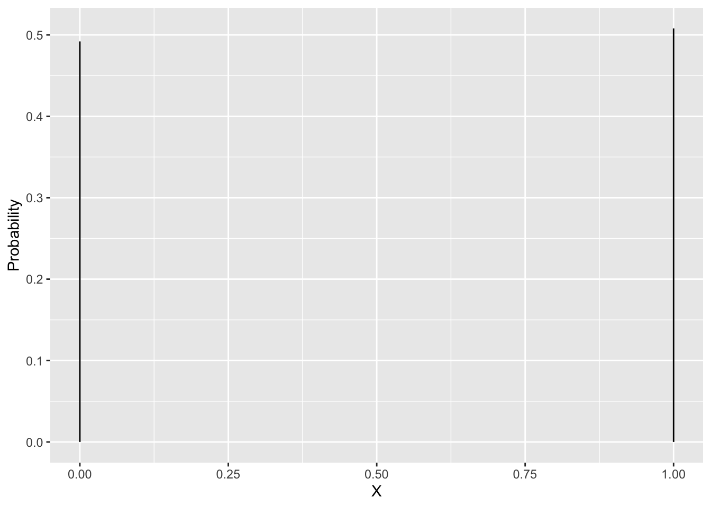
Random variable \(X\) follows an Bernoulli distribution \(B(\pi)\) with parameter \(\pi=0.508\), \[B(\pi)= \pi^x(1-\pi)^{(1-x)}\]
Cumulative distribution function
The cumulative distribution function is the function F(x) that calculates the probability to observe a random variable X for which \(X\leq x\): \[ F(x) = \sum\limits_{\forall X\leq x} P(x)\]
Gender example \(F(0)=1-\pi\) and F(1)=P(X=0) + P(X=1)=1
data.frame(X = c(0, 1), cumprob = c(0.492, 1)) %>%
ggplot(aes(x = X, xend = X, y = 0, yend = cumprob)) +
geom_segment() +
ylab("F(x)")
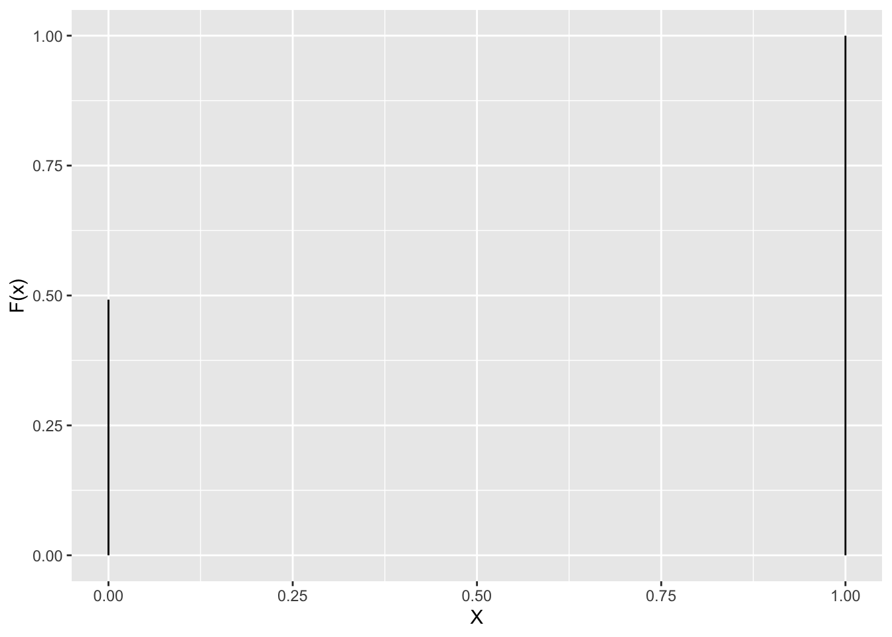
Dice:
data.frame(X = 1:6, cumprob = cumsum(rep(1 / 6, 6))) %>%
ggplot(aes(x = X, xend = X, y = rep(0, 6), yend = cumprob)) +
geom_segment() +
ylab("F(x)")
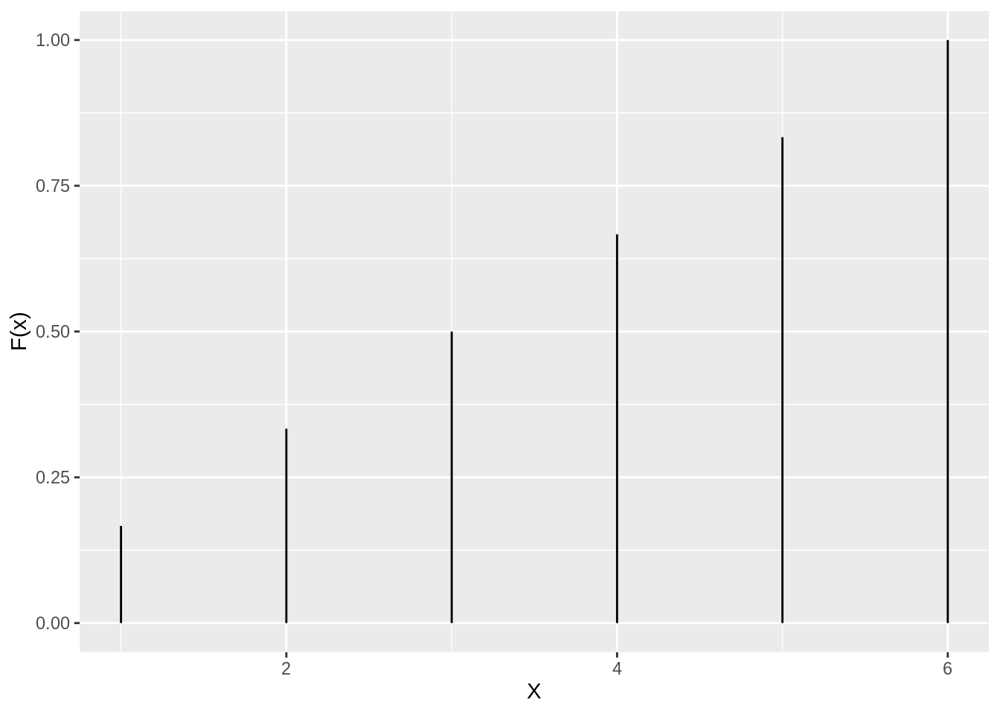
Mean
The mean or the expected value \(E[X]\) of a discrete random variable is given by
\[E[X]=\sum\limits_{x\in\Omega} x P(X=x)\]
Gender example
- \(E[X]= 0 \times (1-\pi) + 1 \times \pi = \pi\)
- The mean equals \(E[X]=0.508\).
Dice example:
\[
E[X]= 1 \times 1/6 + 2 \times 1/6 + \ldots + 6 \times 1/6 = 3.5
\]
Variance
The variance is a measure for the variability of a random variable and is given by
\[E[(X-E[X])^2]=\sum\limits_{x\in\Omega} (x-E[X])^2 P(X=x)\]
- Gender example \[\begin{eqnarray}
E[(X-E[X])^2]&=&(0-\pi)^2\times (1-\pi)+(1-\pi)^2 \times \pi\\
&=& \pi^2 (1-\pi) + (1-\pi)^2 \pi\\
&=&\pi (1-\pi)(\pi+1-\pi)\\
&=&\pi(1-\pi)
\end{eqnarray}\]
Continuous random variable
The density function \(f(x)\) describes how likely it is to observe a particular value of random variable X when we sample a random subject from the population.
Many biological characteristics are approximatively normally distributed (upon transformation) \[f(x) = \frac{1}{\sqrt{2\pi\sigma^2}} e^{-\frac{(x-\mu)^2}{2\sigma^2}}\]
This is denoted in shorthand as \(f(x) = N(\mu,\sigma^2)\)
The IQ in the population is known to follow a normal distribution with mean \(\mu=100\) and standard deviation \(\sigma=15\). \[IQ \sim N(100,15^2)\]
R we can use the dnorm function to calculate the density of particular values of X=x.
The arguments of dnorm are mean (\(\mu\)) and sd (standard deviation \(\sigma\)).
par(mar = c(5, 4, 4, 2) + 0.1, mai = c(1.02, 0.82, 0.82, 0.42))
grid <- seq(40, 160, .1)
plot(grid, dnorm(grid, mean = 100, sd = 15),
xlab = "IQ",
col = 2, ylab = "Densiteit", type = "l", lwd = 2, cex.lab = 1.5, cex.axis = 1.5
)
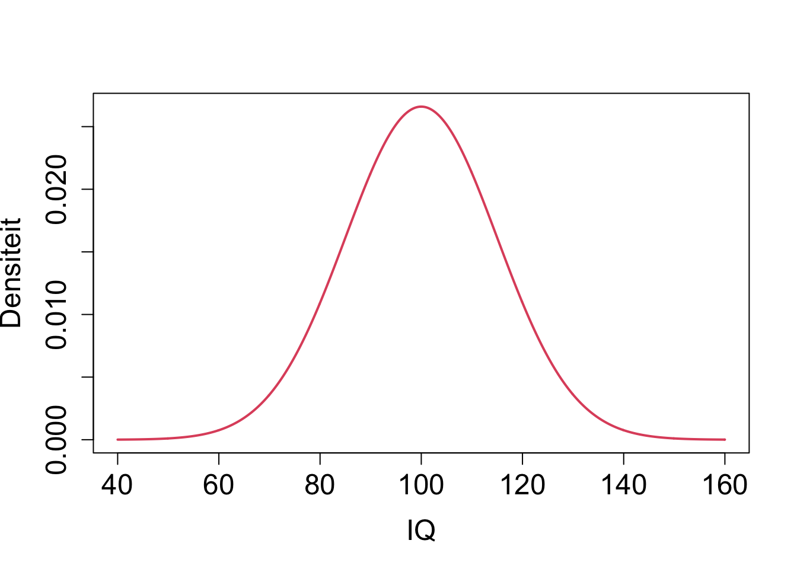
- Within certain limits, continuous variables can take all possible values so the sample space \(\Omega\) is infinitely large.
Cumulative distribution
Again the cumulative distribution \(F(X)=P(X\leq x)\).
Because X is continuous we will calculate this probability using an integral \[F(x)=\int \limits_{-\infty}^x f(x) dx\]
Note that \(f(x)=0\) if x does not belong to the sample space.
We can calculate \(F(x)\) for a normally distributed random variable using the pnorm function again with arguments mean and sd.
plot(grid, pnorm(grid, mean = 100, sd = 15), type = "l", xlab = "IQ", ylab = "Probability")
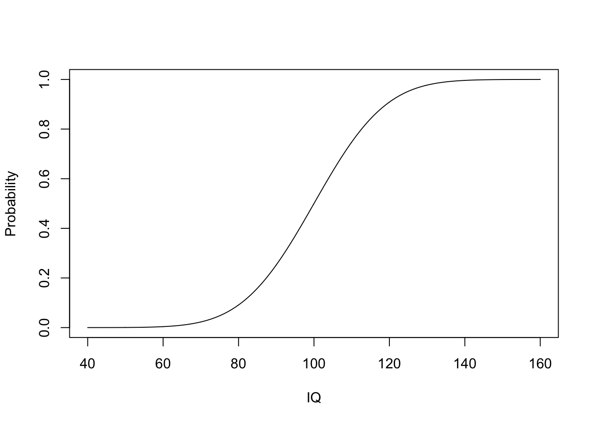
So the probability that the IQ of a random subject is below 80 can be obtained by
pnorm(80, mean = 100, sd = 15)
[1] 0.09121122
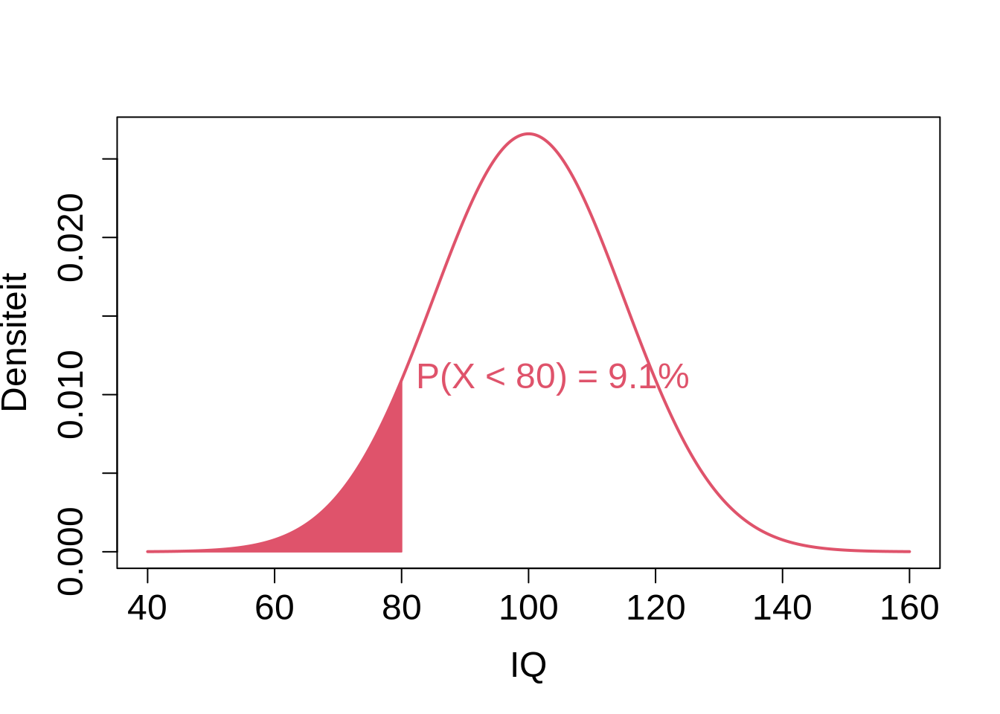
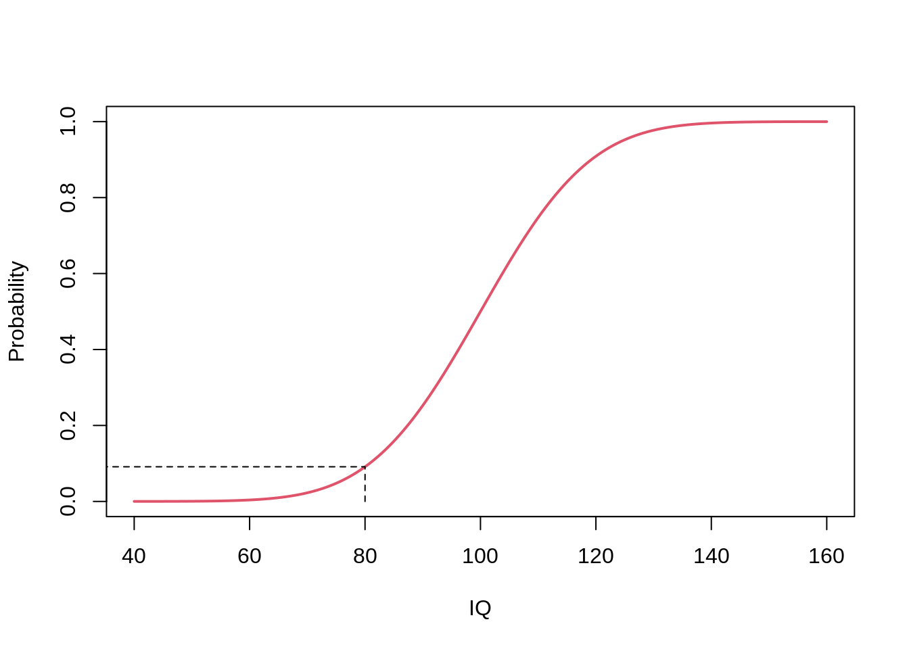
Mean and Variance.
- The mean or the expected value \(E[X]\) of a continuous random variable is given by
\[\int \limits_{x \in \Omega} x f(x) dx\]
\[\int \limits_{x \in \Omega} (x-E[X])^2 f(x) dx\]
- For the normal distribution we get
\[\int \limits_{-\infty}^{+\infty} (x-\mu)^2 f(x) dx = \sigma^2\]
- It is often difficult to interpret the variance because it is not in the same unit as the random variable and the mean. We therefore often use the standard deviation
\[SD=\sqrt{E[(X-E[X])^2]}\]
The SD for a normal distribution, \(\sigma\) has the nice interpretation that approximately 68% of the population has a value for the characteristic X within the interval of one standard deviation (\(\sigma\)) around the mean:
\[P(\mu-\sigma < X < \mu + \sigma) \approx 0.68\]
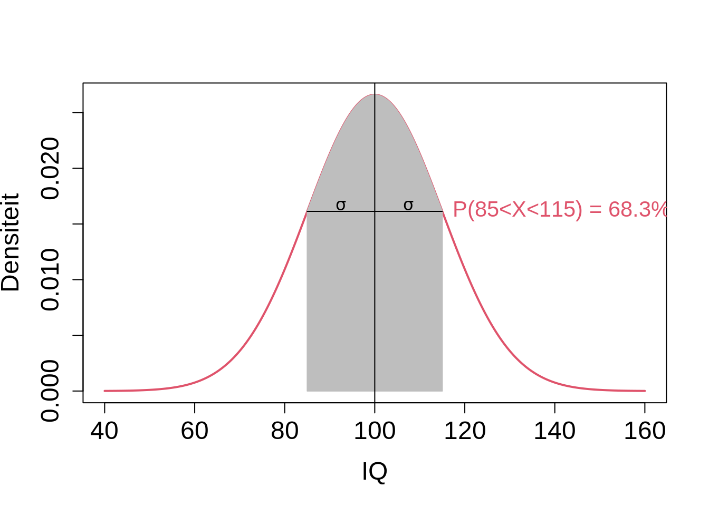
- For normally distributed random variables approximately 95% of the subjects in the population have a value that lays in two standard deviations (\(2 \sigma\)) of the mean
\[P[\mu - 2 \sigma < X < \mu + 2 \sigma]\approx 0.95\] 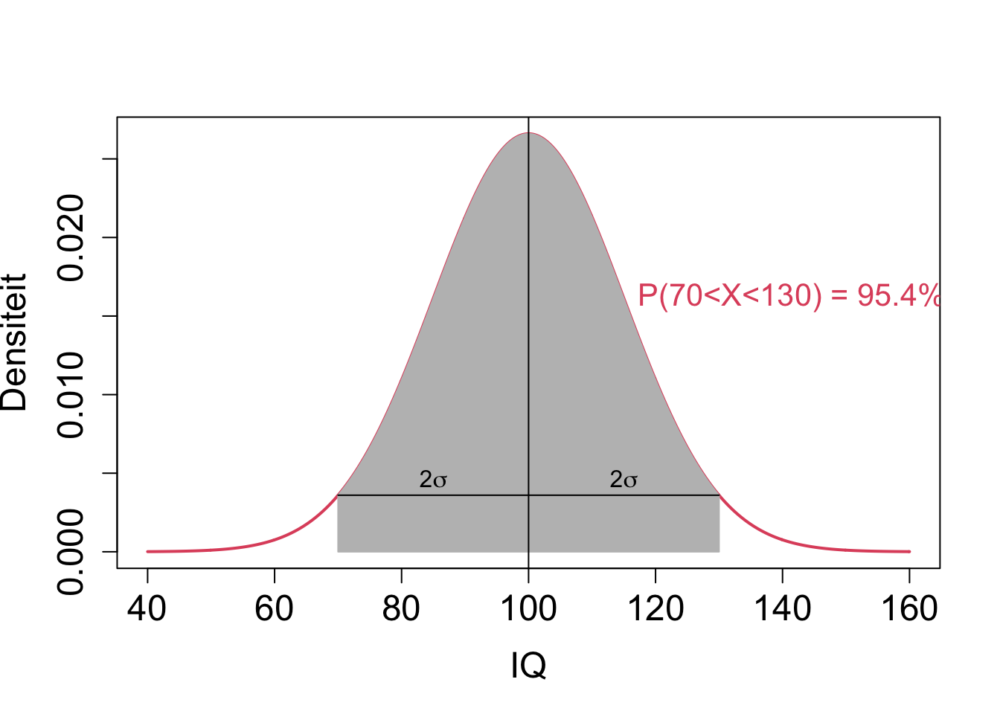
In R cumulative distribution can be calculated with the function pnorm. This function has arguments q the quantile, the mean and the standard deviation.
If you want help you can always type:
- What is the probability that a random subject in the population will have an IQ below 90?
pnorm(q = 90, mean = 100, sd = 15)
[1] 0.2524925
Standardization
- Normal data are often standardized.
\[z=\frac{x-\mu}{\sigma}\]
- Upon standardization the data follow a standard normal distribution with mean \(\mu=0\) and variance \(\sigma^2=1\): \[z \sim N(0,1)\]
We can use the qnorm function to calculate the quantile \(z_{2.5\%}\) and \(z_{97.5\%}\) corresponding to \(F(z_{2.5\%})=0.025\) and \(F(z_{97.5\%})=0.975\), respectively.
[1] -1.959964
[1] 1.959964
This indeed indicates that about 97.5%-2.5%=95% of a standard normal random variable falls within the interval [-2,2], or within 2 times the standard deviation (\(\sigma=1\)) from the mean (\(\mu=0\)).
Sample
In real studies we typically do not know the distribution in the population.
Due to financial and logistic reasons we can almost never study the entire population.
The population parameters (e.g. mean IQ, variance of IQ) can therefore not be obtained without error.
Only as small subset of the population can be studied: the sample
Sample according to a structured design: select subject completely at random from the population so that every subject has an equal probability to end up in the sample \(\rightarrow\) Representative sample.
The sample \(x_1, x_2, . . . , x_{n}\) can be considered to be \(n\) realisations of the same random variable \(X\), for subjects \(i = 1,2,...,n\).
The distribution in the population is unknown and has to be estimated.
If we can assume that the studied characteristic follows a particular distribution (e.g. a normal distribution \(N(\mu,\sigma^2)\) then we only have to estimate the population parameters (e.g \(\mu\) and \(\sigma^2\)) based on the sample.
We refer to them as estimates and denote them by \(\hat \mu\) and \(\hat \sigma^2\).
NHANES example
Gender in the population
Select \(n=10000\) subjects at random from the American population.
Once the random individuals are sampled from the population we have observed \(n\) realisations of the random variable \(X\).
Convention: Observed values \(\rightarrow\) are denoted with a small letter \(x\).
\(x\) is a particular value measured/observed in a conducted experiment and no longer an unknown variable.
In summary
- Unknown values of the studied population characteristic for 1 to \(n\) subjects in a sample are random variables: \(X_1, \ldots, X_n\)
- We have to reason on this in order to understand how the observations, estimates and conclusions of a study can change from sample to sample.
- In a sample we observe the realised outcomes \(x_1, x_2, \dots, x_n\): e.g. the observed genders or the observed direct cholesterol levels of the subjects in the sample.
Gender Example
library(NHANES)
NHANES %>% ggplot(aes(x = Gender)) +
geom_bar()
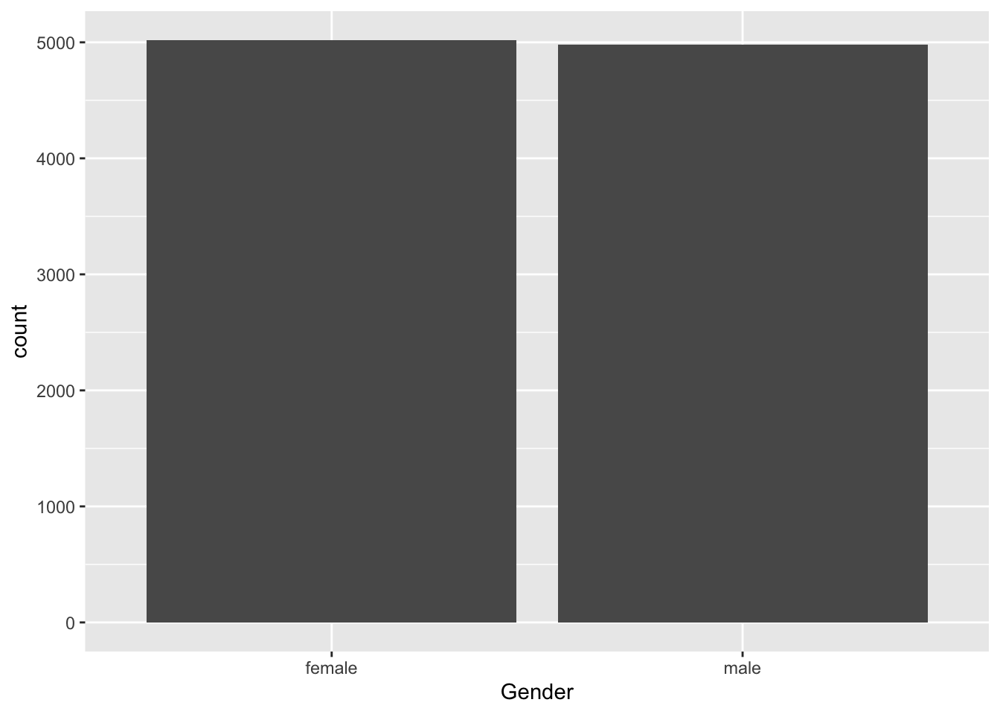
- Gender is a binary variable.
- It thus follows a Bernoulli distibution.
- The parameter of a Bernoulli distribution is the mean \(\pi\).
- We can estimate \(\pi\) based on the sample using the sample mean \(\bar x = \sum\limits_{i=1}^n x_i\)
- Note, that the sample mean is also a random variable! It also varies from sample to sample!
[1] male male male male female male
Levels: female male
- Note, that Gender is a factor and that the females are the reference class (first class).
- R by default uses the level which comes first in the alfabet as the reference class.
- We can recode the Gender using a 0 and 1 coding.
- When we use the as.numeric() function the factor Gender is transformed in a numeric value. It has two values 1 or 2. 1 stands for the first level (females) and 2 for the second level males. If we subtract 1 from it we have a 0 and 1 encoding (0 for females and 1 for males).
NHANES <- NHANES %>% mutate(gender = as.numeric(Gender) - 1)
mean(NHANES$gender)
[1] 0.498
Note, that due to the encoding the sample mean is an estimate for the fraction of males in the population.
Always be careful with the encoding!
Direct cholesterol example
Empirical distribution
- We can estimate the direct cholesterol distribution of females using a histogram
NHANES %>%
filter(Gender == "female") %>%
ggplot(aes(x = DirectChol)) +
geom_histogram()
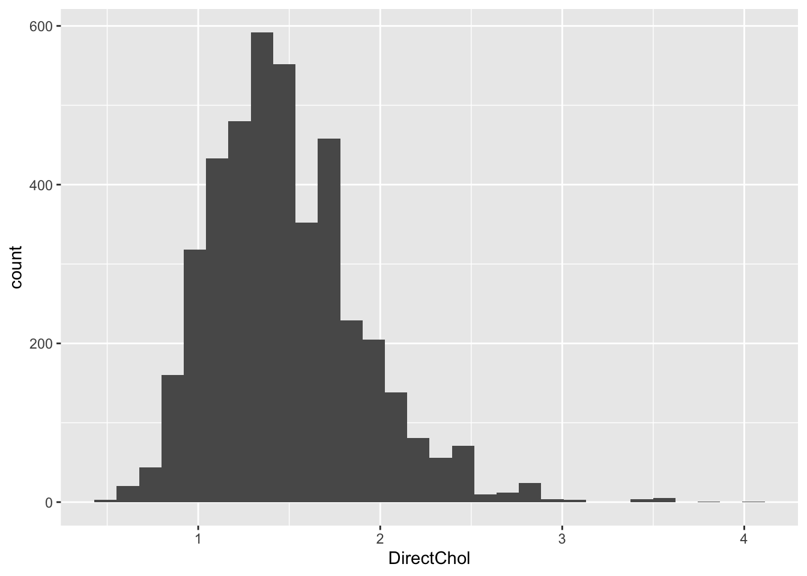
Note, that the distribution is skewed with a tail to the right.
We can estimate the cumulative distribution function using the empirical cumulative distribution function.
- Every observation in the sample is observed once.
- So the empirical distribution of the sample is a discrete distribution with probability of 1/n on every observation.
- The empirical cumulative distribution function then becomes \[ECDF(x) = \sum\limits_{x_i \leq x} \frac{1}{n} = \frac{\# (x_i \leq x)}{n}\]
fem <- NHANES %>% filter(Gender == "female" & !is.na(DirectChol))
fem %>%
ggplot(aes(x = DirectChol)) +
stat_ecdf()
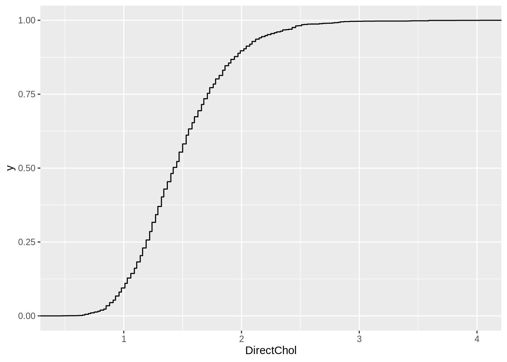
- We also illustrate this for a sample with sample size 10
set.seed(1)
fem10 <- NHANES %>%
filter(Gender == "female" & !is.na(DirectChol)) %>%
sample_n(size = 10)
fem10 %>% ggplot(aes(x = DirectChol)) +
stat_ecdf()

Normal approximation
- In the introduction we have seen that the log transformed direct cholesterol levels had a nice bell shape.
fem %>% ggplot(aes(x = DirectChol %>% log2())) +
geom_histogram(aes(y = ..density.., fill = ..count..)) +
xlab("Direct Cholesterol (log2)") +
stat_function(fun = dnorm, color = "red", args = list(mean = mean(fem$DirectChol %>% log2()), sd = sd(fem$DirectChol %>% log2())))
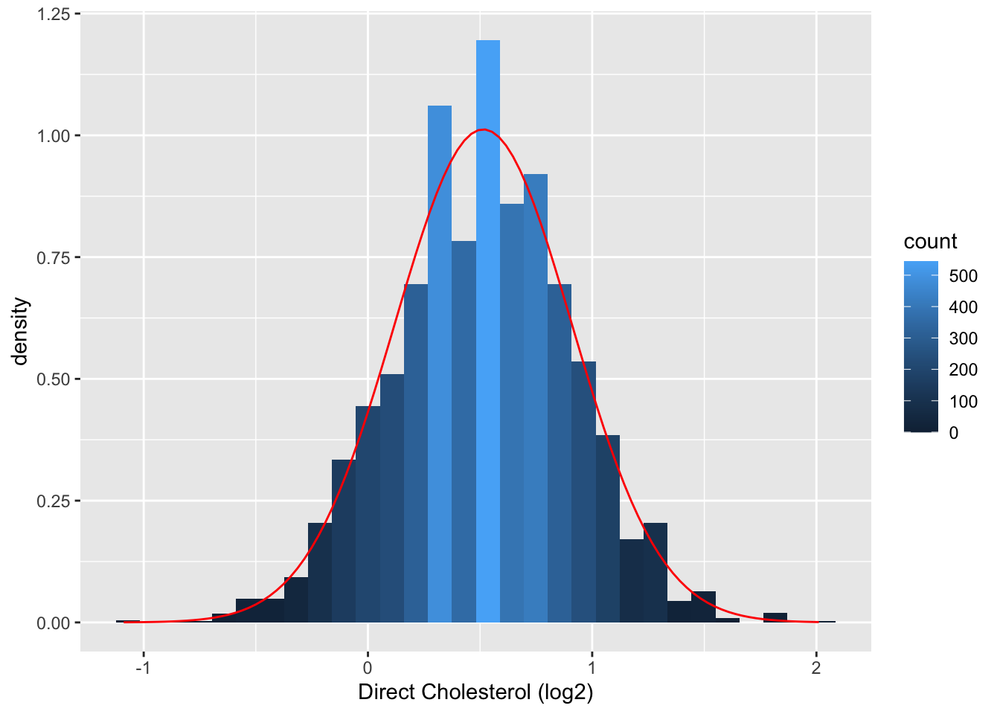
We can now approximate the distribution of log2 transformed direct cholesterol levels using a normal distribution.
We only have to estimate two parameters: the mean and the variance. We can do this based on the sample mean (\(\bar x\)) and sample variance (\(s^2\)) or sample standard deviation (\(s\)).
xBar <- mean(fem$DirectChol %>% log2())
sdBar <- sd(fem$DirectChol %>% log2())
xBar
[1] 0.5142563
[1] 0.394117
- We can do the same thing for the small sample with 10 women.
fem10 %>% ggplot(aes(x = DirectChol %>% log2())) +
geom_histogram(aes(y = ..density.., fill = ..count..), bins = 10) +
xlab("Direct Cholesterol (log2)") +
stat_function(fun = dnorm, color = "red", args = list(mean = mean(fem10$DirectChol %>% log2()), sd = sd(fem10$DirectChol %>% log2()))) +
xlim(-2, 2)
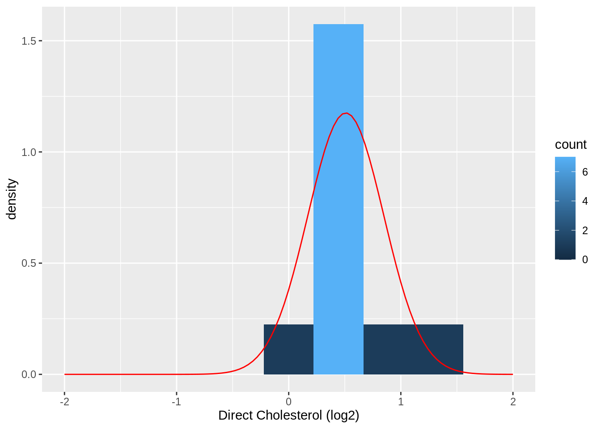
xBar10 <- mean(fem10$DirectChol %>% log2())
sdBar10 <- sd(fem10$DirectChol %>% log2())
xBar10
[1] 0.5093291
[1] 0.3393851
Reference intervals
Normal values for the cholesterol levels in the population can be calculated using a reference interval. Typically a 95% reference interval is used, so that 95% of the subjects in the population are expected to have a value for the characteristic that falls into the reference interval.
We can do this based on the empirical distribution using the quantile function. We need to calculate the quantiles \(\hat{F}(x_{2.5\%})=0.025\) and \(\hat{F}(x_{97.5\%})=0.975\) so that 95% of the values are located in the interval [\(x_{2.5\%}\), \(x_{97.5\%}\)] .
Large sample
quantile(fem$DirectChol, prob = c(0.025, 0.975))
2.5% 97.5%
0.85 2.43
quantile(fem10$DirectChol, prob = c(0.025, 0.975))
2.5% 97.5%
1.05050 2.25675
- Note, that this estimate is very crude. In the small sample, We do not have enough observations to have a good approximation of the extreme quantiles.
Normal approximation
We can use the function qnorm to calculate quantiles from the normal distribution.
We also know that a 95% reference interval is located rougly in two standard deviations around the mean.
We will have to use the function 2^ to transform the result back to the direct cholesterol domain.
Large sample
qnorm(0.025, mean = xBar, sd = sdBar) %>% 2^.
[1] 0.8361311
qnorm(0.975, mean = xBar, sd = sdBar) %>% 2^.
[1] 2.439713
[1] 0.8270361
[1] 2.466543
qnorm(0.025, mean = xBar10, sd = sdBar10) %>% 2^.
[1] 0.8976012
qnorm(0.975, mean = xBar10, sd = sdBar10) %>% 2^.
[1] 2.257165
[1] 0.8891871
[1] 2.278523
Conclusions
For the large sample, the empirical distribution (quantile function) and the normal approximation gives us approximately the same result.
For the small sample, however, the normal approximation works much better than the one based on the empirical distribution.
- This is because we are looking at extreme quantiles 2.5% and 97.5%.
- Indeed, we have very few observations at our disposal in the small sample to estimate these quantiles directly from the observations.
- With the normal approximation we can use all the data to estimate the mean and the variance. So if the normal assumption holds, we get better estimates for these extreme quantiles.
Statistics
Formula will be used to estimate the parameters of a distribution in the population based on the sample. We call these statistics or estimators.
The numeric result obtained by evaluating these formula are also called statistics or estimates.
Researcher want to known the unknown parameters from the population and will thus estimate them using the statistics observed or calculated based on the sample
Because we calculate the statistics based on the observations in the sample, they will also vary from sample to sample and are random variables and we denote them with capital letters (e.g. \(\bar X\) for the sample mean and \(S^2\) for the sample variance).
So when we analyse data, we have to reason on how the statistics of interest will vary from sample to sample.
When the statistics refer to a numeric value realised in a particular sample, we will use a small letter: \(\bar x\) and \(s^2\).
Convention
Population parameters are fixed but unknown and we will denote them with \(\rightarrow\) Greek symbols.
Statistics that we use to estimate unknown parameters based on the sample are denoted with letters are with a hat.
e.g. for normal distribution
| \(\mu\) |
\(\bar X\) or \(\hat \mu\) |
| \(\sigma^2\) |
\(S^2\) or \(\hat \sigma\) |
